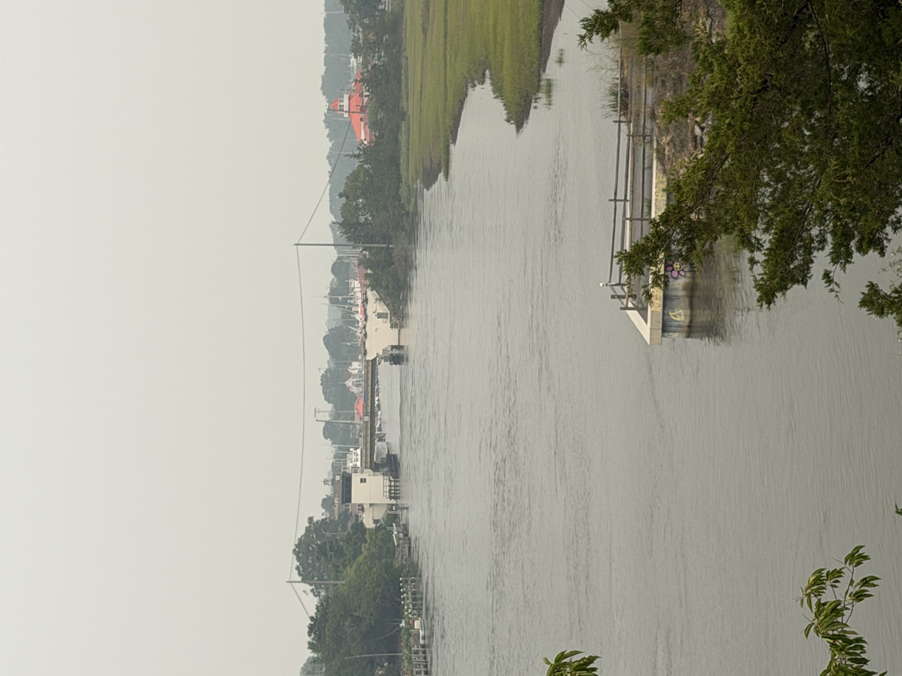

For one weekend this October, Lewes has organized its waterfront into two days. Saturday is Boast the Coast, a free festival at 1812 Memorial Park and the City Dock. Sunday is Coast Day, the University of Delaware's open house at its Hugh R. Sharp Campus, now in its 50th year. The two are being marketed together as Lewes Maritime Weekend, and they fit together better than most paired events do: one is about the town's working waterfront, the other about the science of the coast it sits on.
Both are free to attend. Neither takes all day. The useful planning is mostly about where to park, where to eat, and which one thing on Saturday costs money.
Saturday: Boast the Coast
Saturday, Oct. 3, 11 a.m. to 2 p.m., at 1812 Memorial Park and the City Dock. The Lewes Chamber of Commerce hosts it.
The free activities are on and around the water. Freedom Boat Club is offering canal rides. There is face painting and musical entertainment for the stretch of the day when you are standing still. And the festival is tied to two of the town's maritime landmarks: free visits and tours associated with the Cannonball House and with the Lightship Overfalls.
That pairing is the real draw. The Cannonball House and the Overfalls are two of the town's maritime landmarks, and on Saturday the festival is a reason to see both on the same morning.
Three hours is a short window. If the canal ride and both landmarks are on your list, arrive near the 11 a.m. start rather than planning to drop in at the end.
Saturday, practically
What is free and what is not. The festival activities are free, including the canal rides, the face painting, the music and the visits tied to the Cannonball House and the Lightship Overfalls. The one paid item is separate: Cape Water Tours offers a ticketed one-hour Nautical History Tour. Treat it as its own booking with its own ticket, not something covered by showing up to the festival.
Parking. Parking in the historic business district and around 1812 Park is metered. Parking at the Lightship Overfalls is free. Those are the two facts the organizers have published; how much of either will be open on the day is not something anyone can promise in advance.
Food. There are no food trucks at Boast the Coast. The organizers point to the restaurants within walking distance instead. So lunch is a decision to make on your feet, probably around the 2 p.m. close, rather than something to expect at the dock.
Sunday: Coast Day
Sunday, Oct. 4, 10 a.m. to 3 p.m., at the University of Delaware's Hugh R. Sharp Campus in Lewes. Free.
Coast Day is the annual flagship event of UD's College of Earth, Ocean and Environment, the day the university opens its Lewes campus to the public. This year is its 50th.
What Coast Day at 50 actually offers
Strip away the anniversary and the format is straightforward. There are hands-on activities and live demonstrations, the parts built for people who would rather touch something than read a panel about it. There are tours of the labs and of the ships, a look at the working side of a marine research campus rather than just its front door. There are live performances. And unlike Saturday, there is a food court on site, so Sunday does not need a lunch plan.
If the lab and ship tours are what you came for, decide early which of them matters most to you and start there.
If we were planning the weekend
Built only on the published times:
Saturday, 11 a.m.: Be at 1812 Memorial Park and the City Dock for the start. Do the free canal ride and the Cannonball House and Lightship Overfalls visits while the festival is running. If you want the Cape Water Tours Nautical History Tour, book it separately.
Saturday, 2 p.m.: The festival closes. With no food trucks on site, this is the natural time to walk to lunch at one of the nearby restaurants.
Sunday, 10 a.m.: Coast Day opens at the Hugh R. Sharp Campus. Go to whichever lab or ship tour you most want to see first.
Sunday, midday: Eat at the Coast Day food court rather than leaving the campus.
Sunday, 3 p.m.: Coast Day closes.
That is the whole weekend: two free events, one optional paid tour, and one meal you will need to find for yourself.
Sources: Boast the Coast date, hours, location, host, activities, parking and food details from the Lewes 250 event listing for Boast the Coast Maritime Festival (lewes250.com). Coast Day date, hours, location, admission, 50th year and programme from the University of Delaware's Coast Day 2026 event listing (events.udel.edu) and UDaily's Coast Day 2026 announcement (udel.edu). Delaware Beach Finds did not attend either event before publication. Event details, parking and tour availability are set by the organizers and can change; check their own listings before you go.